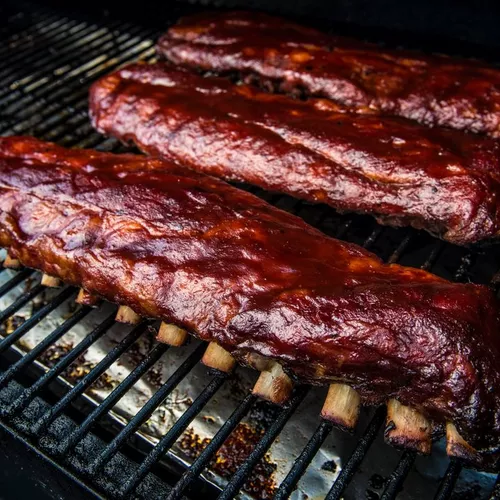

Smoked Pulled Pork

Description
3-2-1 Ribs is a tried and tested method to cook ribs on your smoker. Follow these simple
steps to get delicious ribs, every time
Ingredients
- Pork Ribs
- Mustard
- Your favourite BBQ Rub
- Your favourite BBQ Sauce
- Apple Wood
- Butter
- Apple Juice
- Brown Sugar
Steps
- Preheat your smoker to about 225f
- Remove the membrane from your ribs. You don't have to, but this will help them be fall apart tender.
- Apply a thin layer of mustard to the meat as a binder, then coat generously with rub.
- Put pork into the smoker, and cook for 3 hours.
- Wrap Pork ribs with aluminium foil, bone side up so as to not break the foil.
- Before closing the wrap, place butter, apple juice and brown sugar into the 'dip' in the ribs.
- Cook for a further 2 hours
- Pull the ribs out of the wraps and cook meat side up for another 1 hour at 150f. Baste with bbq sauce throughout.